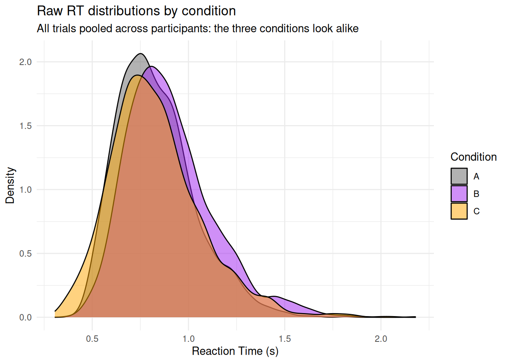
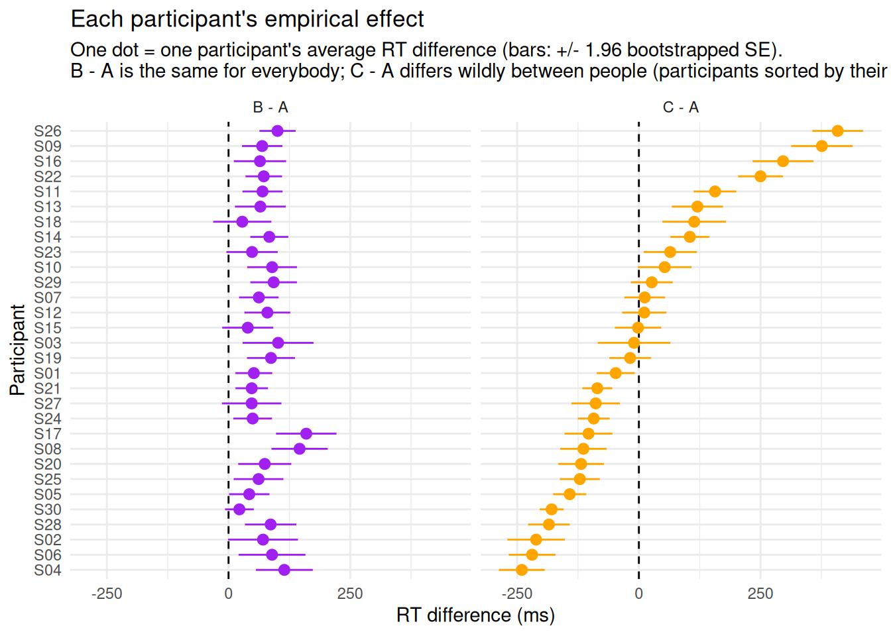
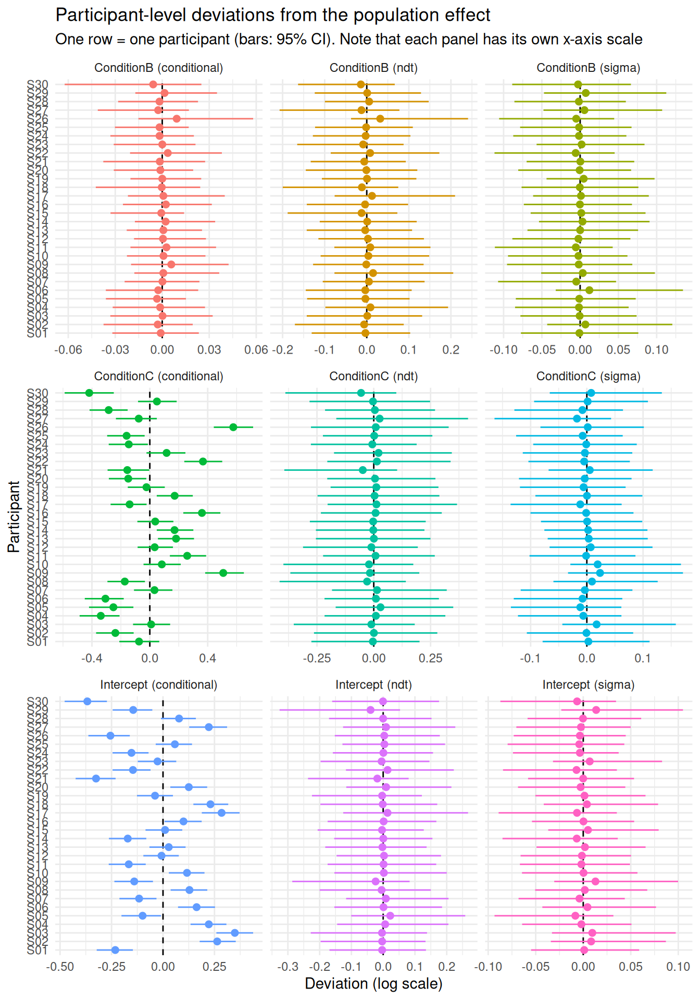

Imagine we have designed a brand new cognitive task. It has three conditions - A, B and C - and our ambition is to use it in a clinical context: to quantify something about individuals, so that a patient’s score can be related to their symptoms, compared to a norm, or tracked over time.
The first thing we do is run a validation study and test whether the conditions affect reaction times. As we will see, only one of them turns out to have a significant effect - and the tempting conclusion is that this effect is the one the task actually captures, and therefore the one we should be computing for each patient.
That conclusion would be premature, and most likely wrong. An average effect tells us what the manipulation does to the group. It says nothing about whether it does the same thing to everybody, and nothing about whether we can measure it in a single person with any precision. Yet those two properties - interindividual variability and reliability - are exactly what determines whether a task can serve as an individual-level instrument, and they have to be assessed on their own terms.
Data Description
Our validation study is a typical repeated-measures design: 30 participants each perform 80 trials in each of the three conditions, and we record their reaction times.
Code
# The data are generated from a **shifted LogNormal** process (see cogmod's
# cogmod_lognormal() family): a non-decision time `ndt` - the incompressible
# encoding + motor delay - to which a LogNormal-distributed decision time is
# added.
#
# Because we are simulating the data, we get to decide what is true, and we make
# the two effects *deliberately* different:
#
# - **A vs. B**: a small but extremely **consistent** effect. Every participant
# is slowed down by about the same amount (the between-participant SD of the
# effect is tiny, 0.01). There is essentially no interindividual variability.
# - **A vs. C**: an effect with a population mean of **exactly zero**, but a very
# large between-participant SD (0.30). Some participants are dramatically
# slowed down by condition C, others are dramatically speeded up.
set.seed(14)
n_participants <- 30
n_trials <- 80 # Per condition
ndt <- 0.15 # Non-decision time (s): no response can occur before that
participants <- data.frame(
Participant = sprintf("S%02d", 1:n_participants),
# Overall speed: participants differ substantially from one another
Intercept = rnorm(n_participants, mean = log(0.6), sd = 0.20),
# A vs. B: small effect, (almost) identical for everybody
Effect_B = rnorm(n_participants, mean = 0.10, sd = 0.01),
# A vs. C: no effect on average, but huge interindividual variability
Effect_C = rnorm(n_participants, mean = 0.00, sd = 0.30)
)
sim <- expand.grid(
Trial = 1:n_trials,
Condition = c("A", "B", "C"),
Participant = participants$Participant,
stringsAsFactors = FALSE
) |>
left_join(participants, by = "Participant") |>
mutate(
# Trial-level mean of the *decision* time, on the log scale
meanlog = Intercept +
if_else(Condition == "B", Effect_B, 0) +
if_else(Condition == "C", Effect_C, 0),
# Generate RTs, adding within-participant (trial-to-trial) noise, and shift
# the whole distribution by the non-decision time
RT = ndt + rlnorm(n(), meanlog = meanlog, sdlog = 0.22),
Participant = factor(Participant),
Condition = factor(Condition)
) |>
arrange(Participant, Condition, Trial) |>
select(Participant, Trial, Condition, RT)Looking at the raw distributions, the three conditions are nearly indistinguishable, and nothing suggests that B and C differ in any interesting way.
ggplot(sim, aes(x = RT, fill = Condition)) +
geom_density(alpha = 0.5) +
scale_fill_manual(values = c("A" = "grey40", "B" = "purple", "C" = "orange")) +
labs(
title = "Raw RT distributions by condition",
subtitle = "All trials pooled across participants: the three conditions look alike",
x = "Reaction Time (s)", y = "Density"
) +
theme_minimal()
Empirical Estimates
Let us now compute the score we would hand to a clinician: for each participant, average the RTs within each condition and subtract, giving an “empirical” effect of B - A and of C - A (expressed here in milliseconds).
Because each of these differences is computed from a finite number of trials, it also comes with its own uncertainty. We quantify it by bootstrapping: for a given participant, we resample their trials with replacement within each condition, recompute the difference, and repeat. The SD of the resulting bootstrap distribution is the standard error (SE) of that participant’s score - i.e., how much it would wobble if we ran the task again.
# Bootstrapped SE of the difference between two sets of trials
boot_se <- function(rt1, rt2, n_boot = 1000) {
boot <- replicate(
n_boot,
mean(sample(rt2, replace = TRUE)) - mean(sample(rt1, replace = TRUE))
)
sd(boot)
}
set.seed(3)
empirical <- sim |>
reframe(
Effect = c("B - A", "C - A"),
Difference = c(
mean(RT[Condition == "B"]) - mean(RT[Condition == "A"]),
mean(RT[Condition == "C"]) - mean(RT[Condition == "A"])
) * 1000,
SE = c(
boot_se(RT[Condition == "A"], RT[Condition == "B"]),
boot_se(RT[Condition == "A"], RT[Condition == "C"])
) * 1000,
.by = Participant
)
empirical |>
summarise(
Mean = mean(Difference),
SD = sd(Difference),
Min = min(Difference),
Max = max(Difference),
SE = mean(SE),
.by = Effect
)
#> Effect Mean SD Min Max SE
#> 1 B - A 73.956648 30.80423 22.2618 159.6227 25.45262
#> 2 C - A 0.444845 170.68889 -240.4986 408.4365 24.20110The two effects could not be more different, and yet the number we usually report - the mean - is blind to it. The B - A effect is about +74 ms on average, with a between-participant SD of ~31 ms. The C - A effect has a mean of essentially zero (+0.4 ms) - but a between-participant SD of ~171 ms, and it ranges from -240 ms to +408 ms depending on which participant we look at.
The last column is where things get interesting. The typical participant’s score carries an SE of about 25 ms in both cases - the two effects are measured with the same precision. But that precision means very different things relative to how much participants actually differ: 25 ms of noise is almost as large as the 31 ms of observed spread in B - A, while it is a small fraction of the 171 ms observed in C - A.
Code
# Sort participants by the size of their C - A effect
order_C <- empirical |>
filter(Effect == "C - A") |>
arrange(Difference) |>
pull(Participant)
empirical |>
mutate(Participant = factor(Participant, levels = order_C)) |>
ggplot(aes(x = Difference, y = Participant, color = Effect)) +
geom_vline(xintercept = 0, linetype = "dashed") +
geom_linerange(aes(xmin = Difference - 1.96 * SE, xmax = Difference + 1.96 * SE)) +
geom_point(size = 2.5) +
facet_wrap(~Effect) +
scale_color_manual(values = c("B - A" = "purple", "C - A" = "orange")) +
labs(
title = "Each participant's empirical effect",
subtitle = paste(
"One dot = one participant's average RT difference (bars: +/- 1.96 bootstrapped SE).",
"\nB - A is the same for everybody; C - A differs wildly between people",
"(participants sorted by their C - A effect)."
),
x = "RT difference (ms)", y = "Participant"
) +
theme_minimal() +
theme(legend.position = "none")
The picture is unambiguous. On the left, every single participant shows the same small slowing in condition B: the effect is reliable in the sense of being reproducible across people, but there is almost nothing to distinguish one participant from another - the error bars are nearly as wide as the entire range of scores. On the right, participants are spread all over the place, with some being massively slower and others massively faster in condition C, by amounts that dwarf their individual error bars - and these differences cancel out to nothing at the group level.
This is bad news for our original plan. Condition B - the one that reached significance, and on which we were about to build our clinical index - gives essentially the same score to everybody, and a measure that does not vary between people cannot possibly correlate with symptoms, separate patients from controls, or track change. Condition C - the “null” effect that we would have discarded - is the one carrying the individual differences we are after.
Careful: empirical estimates are noisy!
These per-participant differences are not clean measurements of each participant’s true effect. Each one is computed from a finite number of trials and therefore carries measurement error - which is exactly what the bootstrapped SE quantifies. For B - A, there still seems to be a spread of ~31 ms, even though we generated the data with a near-zero between-participant SD. The bootstrap tells us why: with an SE of ~25 ms per participant, the observed variance is almost entirely measurement noise. Subtracting the noise variance from the observed variance leaves less than 20 ms of “true” spread - and even that residual is an overestimate, since both quantities are themselves estimated. For C - A the same subtraction barely changes anything (171 ms → ~169 ms): there, the differences between people are real.
This back-of-the-envelope correction is the whole idea behind reliability, but doing it by hand has obvious limits: it treats each participant’s score as a fixed number to be de-noised afterwards, it does not propagate the uncertainty into anything we do next (e.g., correlating the scores with a symptom questionnaire), and it says nothing about the shape of the RT distribution the scores came from. A model can do all of this in one go, by estimating the between-participant variability and the trial-level noise jointly instead of separating them after the fact.
Modeling
We now fit a mixed shifted LogNormal model, which mirrors the way the data were generated: the effect of Condition is estimated at the population level (fixed effects) and allowed to vary across participants (random slopes).
Because the family has more than one parameter, we can do the same for the other two that carry individual differences here: sigma (how variable a participant’s decision times are) and ndt (their non-decision time, estimated directly in seconds). Giving each of them the same Condition + (Condition | Participant) structure means that every participant gets their own dispersion and their own shift - and their own condition effects on both - rather than being forced to share the group’s. This costs a fair number of parameters, but it is the only way to find out whether these quantities carry individual differences of their own, and, as we will see below, whether they are reliable enough to be used as scores.
f <- bf(
RT ~ Condition + (Condition | Participant),
sigma ~ Condition + (Condition | Participant),
ndt ~ Condition + (Condition | Participant),
family = cogmod_lognormal()
)
m <- brm(f,
data = sim,
prior = cogmod_priors(f, sim),
init = cogmod_inits(f, sim),
stanvars = cogmod_stanvars(f),
chains = 4, iter = 1000, backend = "cmdstanr"
)The random-effects parts are the key ingredient: they tell the model that each participant has their own intercept and their own condition effects, their own sigma and their own ndt, and they estimate how much each of these varies. Note also that we do not need to transform the RTs: family = cogmod_lognormal() handles the skew directly - and, through ndt, the non-decision time - so the coefficients are simply expressed on the log scale of the decision time.
Let us first look at the fixed effects, i.e., the population-level answer to “is there an effect of condition?”.
parameters(m, effects = "fixed")
#> Loading required namespace: rstan
#> # Fixed Effects
#>
#> Parameter | Median | 95% CI | pd | Rhat | ESS (tail)
#> -------------------------------------------------------------------
#> (Intercept) | -0.47 | [-0.57, -0.38] | 100% | 1.014 | 649
#> ConditionB | 0.10 | [ 0.04, 0.17] | 99.80% | 1.004 | 1113
#> ConditionC | -0.02 | [-0.15, 0.10] | 62.90% | 1.003 | 1163
#>
#> # ndt Parameters
#>
#> Parameter | Median | 95% CI | pd | Rhat | ESS (tail)
#> ---------------------------------------------------------------------
#> (Intercept) | -1.72 | [-1.95, -1.53] | 100% | 1.001 | 1037
#> ConditionB | 0.01 | [-0.24, 0.24] | 53.75% | 1.003 | 958
#> ConditionC | 6.98e-03 | [-0.28, 0.29] | 51.90% | 1.001 | 1355
#>
#> # sigma Parameters
#>
#> Parameter | Median | 95% CI | pd | Rhat | ESS (tail)
#> -------------------------------------------------------------------
#> (Intercept) | -1.35 | [-1.43, -1.27] | 100% | 1.001 | 1134
#> ConditionB | 0.04 | [-0.05, 0.12] | 80.00% | 1.002 | 1047
#> ConditionC | 0.02 | [-0.08, 0.13] | 65.00% | 1.002 | 1285
#>
#> Uncertainty intervals (equal-tailed) computed using a MCMC distribution
#> approximation.This reproduces the classic conclusion: an effect of condition B (0.10 on the log scale, 95% CI [0.00, 0.21], pd = 97%), and nothing at all for condition C (-0.04, 95% CI [-0.23, 0.14], pd = 65%), whose credible interval is comfortably centered on zero. The sigma and ndt blocks tell a similar story for the other two parameters: no condition effect on the dispersion or on the non-decision time comes close to being convincing (all pd < 75%), which is as it should be, since we simulated both as constant.
The crucial addition is the random effects, which quantify how much participants differ from each other on each of these parameters:
parameters(m, effects = "random_variance")
#> # Fixed Effects (Participant)
#>
#> Parameter | Median | 95% CI | pd | Rhat | ESS (tail)
#> ------------------------------------------------------------------------------
#> (Intercept) | 0.21 | [ 0.16, 0.28] | 100% | 1.013 | 732
#> ConditionB | 0.01 | [ 0.00, 0.03] | 100% | 1.012 | 860
#> ConditionC | 0.27 | [ 0.21, 0.37] | 100% | 1.011 | 955
#> Intercept ~ ConditionB | -0.13 | [-0.87, 0.79] | 58.90% | 1.001 | 1516
#> Intercept ~ ConditionC | -0.22 | [-0.53, 0.15] | 88.55% | 1.005 | 1258
#> ConditionB ~ ConditionC | 0.28 | [-0.74, 0.92] | 69.15% | 1.041 | 130
#>
#> # sigma Parameters (Participant)
#>
#> Parameter | Median | 95% CI | pd | Rhat | ESS (tail)
#> ------------------------------------------------------------------------------
#> (Intercept) | 0.02 | [ 0.00, 0.06] | 100% | 1.004 | 640
#> ConditionB | 0.03 | [ 0.00, 0.08] | 100% | 1.007 | 712
#> ConditionC | 0.04 | [ 0.00, 0.11] | 100% | 1.014 | 733
#> Intercept ~ ConditionB | -0.10 | [-0.90, 0.84] | 56.65% | 1.001 | 1195
#> Intercept ~ ConditionC | -0.07 | [-0.89, 0.85] | 54.20% | 1.000 | 803
#> ConditionB ~ ConditionC | 0.01 | [-0.88, 0.88] | 51.00% | 1.005 | 1042
#>
#> # ndt Parameters (Participant)
#>
#> Parameter | Median | 95% CI | pd | Rhat | ESS (tail)
#> --------------------------------------------------------------------------------------
#> (Intercept) | 0.06 | [ 0.00, 0.16] | 100% | 1.006 | 1123
#> ndt_ConditionB | 0.04 | [ 0.00, 0.13] | 100% | 1.003 | 900
#> ndt_ConditionC | 0.11 | [ 0.01, 0.26] | 100% | 1.011 | 737
#> ndt_Intercept ~ ndt_ConditionB | 0.02 | [-0.85, 0.84] | 51.20% | 0.999 | 1148
#> ndt_Intercept ~ ndt_ConditionC | 0.06 | [-0.82, 0.86] | 53.90% | 1.001 | 1101
#> ndt_ConditionB ~ ndt_ConditionC | 0.14 | [-0.82, 0.90] | 58.50% | 1.005 | 1221
#>
#> Uncertainty intervals (equal-tailed) computed using a MCMC distribution
#> approximation.Here the two effects finally become distinguishable. The SD of the ConditionB slope is 0.01, i.e., essentially nothing: participants barely differ in how much B affects them. The SD of the ConditionC slope, in contrast, is 0.27 - more than twenty times larger. This is the model formally telling us that there is a lot going on in condition C, it just does not go in the same direction for everybody. Note also that the model recovers the true between-participant SD of the B effect (~0.01) rather than the inflated ~31 ms spread of the raw empirical differences: the measurement noise has been correctly assigned to the residual term instead of being mistaken for interindividual variability.
The sigma and ndt blocks also report non-zero SDs (around 0.03-0.04 for sigma, and 0.10-0.34 for ndt). Resist the temptation to read these as evidence of individual differences. A random-effect SD is a variance, not a ratio: it is expressed on the scale of its own parameter, it is bounded below by zero (so its posterior can never be centered on zero, and its pd is uninformative), and it says nothing about how precisely each participant’s value is known. Turning it into a verdict requires comparing it to that precision - which is exactly what the next section does.
Group-Level Indices Extraction
Beyond knowing that participants differ, we often want to know how each individual differs - for instance to correlate these individual effects with another variable (a questionnaire score, a diagnosis, another task). These participant-level deviations can be extracted with modelbased::estimate_grouplevel().
random <- estimate_grouplevel(m)
head(random)
#> Component | Group | Level | Parameter | Median | MAD | 95% CI
#> --------------------------------------------------------------------------------------
#> conditional | Participant | S01 | ConditionB | -4.34e-04 | 9.00e-03 | [-0.03, 0.03]
#> conditional | Participant | S01 | ConditionC | -0.07 | 0.07 | [-0.22, 0.07]
#> conditional | Participant | S01 | Intercept | -0.24 | 0.05 | [-0.33, -0.14]
#> conditional | Participant | S02 | ConditionB | -2.95e-03 | 0.01 | [-0.04, 0.02]
#> conditional | Participant | S02 | ConditionC | -0.25 | 0.07 | [-0.39, -0.11]
#> conditional | Participant | S02 | Intercept | 0.27 | 0.05 | [ 0.18, 0.37]Each row is one participant’s deviation from the population-level (fixed) effect, together with its uncertainty. We can visualize all of them at once - plot(random) gives a quick default version, but building the forest plot by hand lets us give each parameter its own color:
as.data.frame(random) |>
# `Component` distinguishes mu (conditional) from sigma and ndt
mutate(Parameter = paste0(Parameter, " (", Component, ")")) |>
ggplot(aes(x = Median, y = Level, color = Parameter)) +
geom_vline(xintercept = 0, linetype = "dashed") +
geom_linerange(aes(xmin = CI_low, xmax = CI_high)) +
geom_point(size = 2) +
facet_wrap(~Parameter, scales = "free_x") +
labs(
title = "Participant-level deviations from the population effect",
subtitle = "One row = one participant (bars: 95% CI). Note that each panel has its own x-axis scale",
x = "Deviation (log scale)", y = "Participant"
) +
theme_minimal() +
theme(legend.position = "none")
The contrast between the two effects is now expressed as model parameters rather than as raw averages. For ConditionB, all the individual deviations are packed within ±0.01 of zero and every single credible interval includes zero: the model concludes that, once measurement noise is accounted for, participants essentially share the same effect. For ConditionC, the deviations span -0.40 to +0.57 and 18 of the 30 clearly exclude zero - these are genuine, statistically supported individual differences. The same is true of the Intercept, which captures how fast each participant is overall.
The sigma and ndt panels look different again: their point estimates are all bunched up around zero while their intervals are wide. That combination - no spread, much uncertainty - is the visual signature of a parameter about which the data carry no individual-level information, and it is worth learning to recognize, because it is easy to mistake a wide-but-centered set of intervals for “an effect we failed to detect”.
Because these estimates come from a model, they are also shrunk towards the population mean in proportion to how noisy each participant’s data is: participants with fewer or more variable trials are pulled more strongly towards the average. This is a feature, not a bug - it is the model-based counterpart of the noise correction we attempted by hand above, applied participant by participant rather than to the group as a whole. It prevents us from over-interpreting extreme values that the raw empirical differences produce by chance, and it is why model-based individual scores are generally more reliable than difference scores computed by hand - all the more so when participants provide few trials, are noisy, or contribute unbalanced numbers of observations.
Quantifying Variability: the D-vour Index
So far we have been looking at plots and comparing SDs to SEs by hand. It would be better to have a single number that answers the question “are these individual estimates informative enough to be used as individual scores?”. This is what the Variance-Over-Uncertainty Ratio (D-vour), implemented in performance::performance_dvour(), provides. It is, in essence, a Signal-to-Noise ratio index corresponding to the normalized ratio of the observed variability between group levels to the uncertainty of their estimates:
where is the between-participant variability (the SD of the random effect point-estimates) and is the mean squared uncertainty (the average SE, or MAD, of those estimates). It is bounded between 0 and 1: values close to 1 mean that participants differ from one another far more than we are unsure about where each of them stands, while values close to 0 mean that the apparent spread is mostly measurement noise.
This is exactly the comparison we made informally above, and nothing stops us from applying the same formula to the bootstrapped empirical estimates:
The empirical B - A score lands at ~0.59 and the C - A score at ~0.98. On the model-based indices, the same index is obtained by passing the output of estimate_grouplevel() (or the model itself) to performance_dvour():
performance_dvour(random)
#> Component Group Parameter D_vour
#> 1 conditional Participant ConditionB 0.07140210
#> 2 conditional Participant ConditionC 0.93032310
#> 3 conditional Participant Intercept 0.94483827
#> 4 ndt Participant ConditionB 0.05964280
#> 5 ndt Participant ConditionC 0.09908817
#> 6 ndt Participant Intercept 0.08155732
#> 7 sigma Participant ConditionB 0.02604177
#> 8 sigma Participant ConditionC 0.07793225
#> 9 sigma Participant Intercept 0.05532574The ordering is the one we expected - ConditionC at 0.92 is highly reliable, ConditionB is not - but the model is far more severe than our by-hand version: B falls from 0.59 to 0.07. The disagreement is instructive. The empirical scores still contain the trial noise that the model has reassigned to the residual term, and that noise inflates their apparent between-participant spread. Taken at face value, the empirical 0.59 would have suggested that B was borderline usable; the model says it carries essentially no individual-level information at all.
Notice also the Intercept, at 0.94. The most reliable individual measure this task produces is simply how fast each participant is overall - the very quantity the experimental design treats as a nuisance to be subtracted away. This is the usual situation rather than an accident of our simulation, and it is worth keeping in mind before building a clinical index out of a difference score.
Because we gave sigma and ndt their own predictors and random effects, the output also contains one row per parameter per component, and each gets its own reliability verdict. This is worth doing systematically: nothing guarantees that the parameters carrying the individual differences are the ones we manipulated. Here, we know they are not, because we generated every participant’s decision times with the same sdlog = 0.22 and the same non-decision time of 150 ms - and indeed all six sigma and ndt rows land below 0.12, the index correctly reporting that whatever spread we saw in their group-level estimates is uncertainty rather than genuine differences. Treat this as a negative control: it is the behaviour we want the index to have, and it is the pattern to expect for a parameter that is truly homogeneous across people.
Real data usually behave differently. Response-time variability in particular is often more discriminating between individuals than the mean - it is one of the central points of Williams et al. (2021) - and non-decision time is a natural candidate for a stable, person-specific quantity. Had these been the reliable components in our data, the sensible clinical index would have been sigma or ndt, not a condition contrast at all.
As for any such index, the thresholds are conventions rather than laws. Values above 0.75 indicate strong group-level differences, values around 0.5 call for caution (within- and between-group variability are comparable), and values below 0.5 indicate that measurement noise dominates. A useful intermediate landmark is 2/3 (0.666), which corresponds to a 2:1 ratio of between-group variance to uncertainty, and can be taken as the threshold for moderately reliable random effect estimates.
Related indices and constructs
D-vour is one member of a family of ideas that all revolve around separating true score variance from error variance:
- It is formally close to an intraclass correlation coefficient (ICC), with the important difference that the denominator uses the uncertainty of the estimates rather than the raw within-participant variance. Concretely, an ICC asks “how large are the differences between participants compared to the trial-to-trial noise?”, so it stays low whenever single trials are noisy - even if each participant’s score is, in the end, precisely estimated. D-vour asks the question that actually matters for an individual-level instrument: “how large are the differences between participants compared to how well we know where each of them stands?”. Collecting more trials per participant shrinks that uncertainty and increases D-vour, while leaving the raw within-participant variance - and hence the ICC - essentially untouched.
- It is a normalized version of the signal-to-noise ratio proposed by Rouder & Mehrvarz (2024), who show that this quantity - unlike classical reliability coefficients - characterizes the task itself rather than the particular sample size it was administered with. The related
performance::performance_reliability()implements that trial-count-adjusted variant, and the two are worth reporting together. - It is one quantitative expression of the reliability paradox described by Hedge, Powell & Sumner (2018): the tasks with the most robust experimental effects are often the worst at measuring individual differences, precisely because a manipulation that affects everybody in the same way (our condition B) minimizes between-participant variance. This is not a statistical curiosity: it is a structural reason why many well-established paradigms transfer poorly to clinical or differential settings.
- The hierarchical-modelling perspective it rests on is developed in Williams et al. (2021), whose mixed-effects location-scale framework is the reason we gave
sigmaandndttheir own random effects above: incogmod’s families, the dispersion, the shift or the drift rate can each carry their own reliability, and each deserves to be checked separately.
The practical recommendation that follows is simple: compute D-vour for every parameter you intend to use as an individual-level score, and report it alongside the effect itself. A parameter with a large fixed effect and a low D-vour is a good group-level manipulation check and a bad individual-level instrument.
Conclusion
The take-home message is that an average effect and an interindividual difference are two different things, and that a study designed to detect the first can be blind to the second. A significant fixed effect does not imply that the task is useful to characterize individuals, and a null fixed effect does not imply that nothing is happening.
Mixed models give access to both at once: the fixed effects answer the traditional group-level question, the random-effect SDs tell you whether there is any interindividual variability to speak of, and the group-level indices give you per-participant estimates that are usable as individual scores - with D-vour telling you whether they are precise enough to deserve that use.